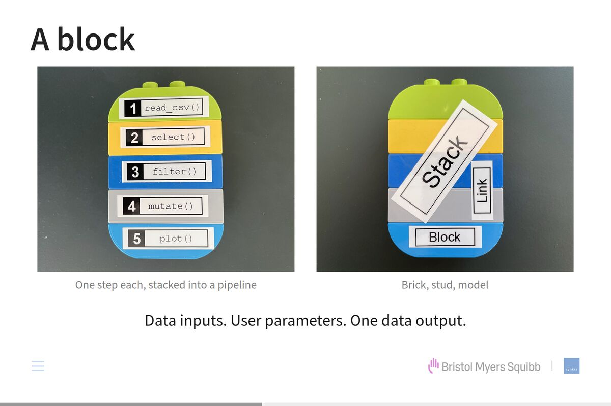
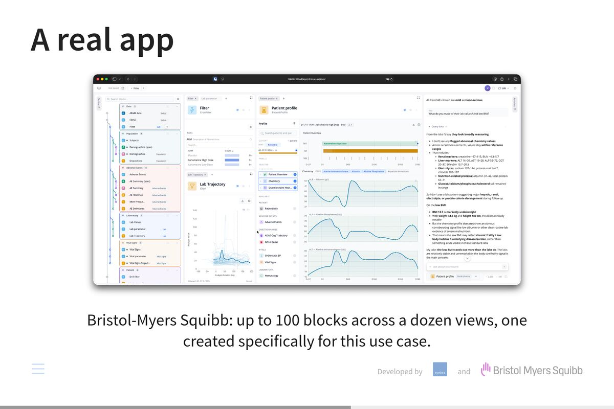
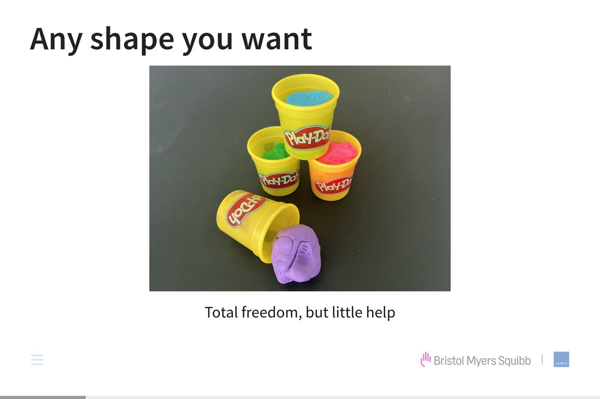
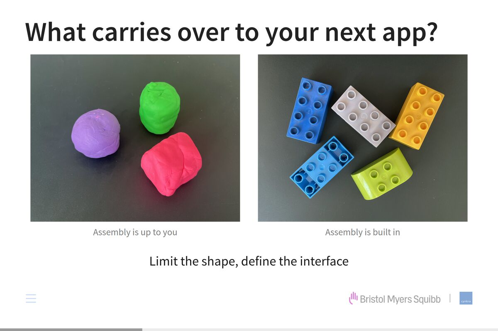
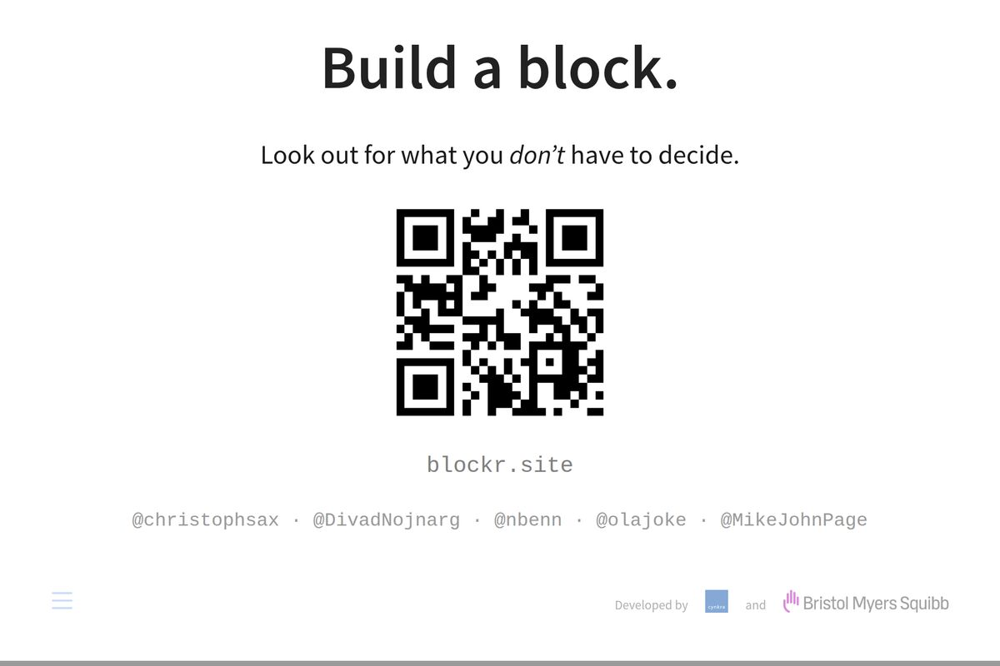
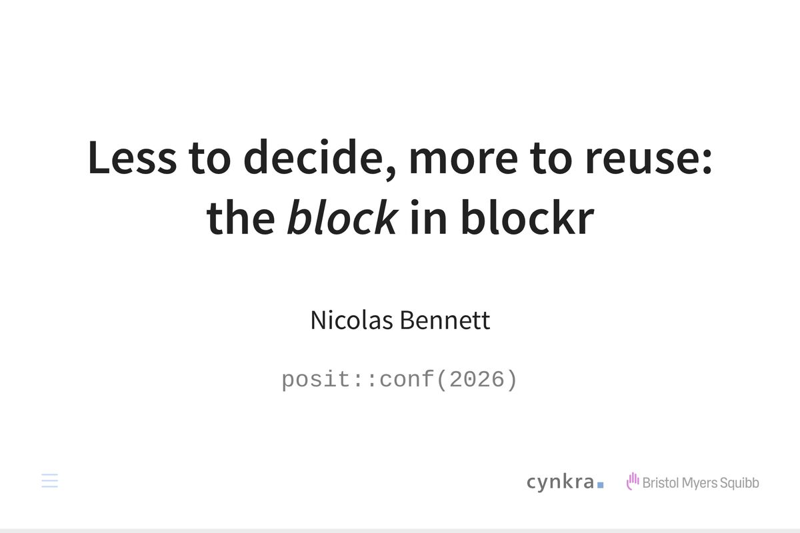
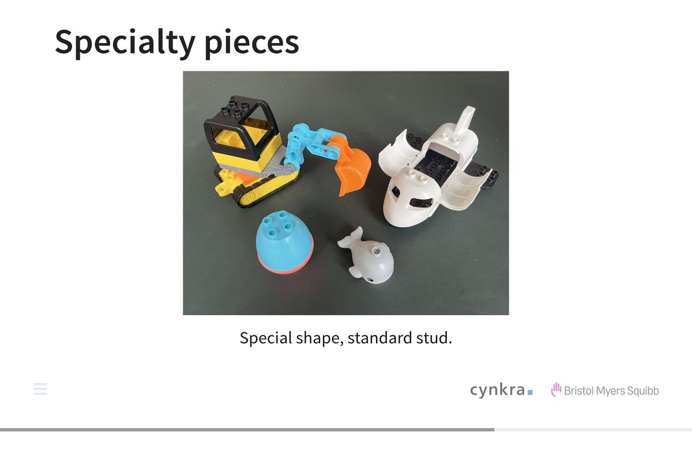
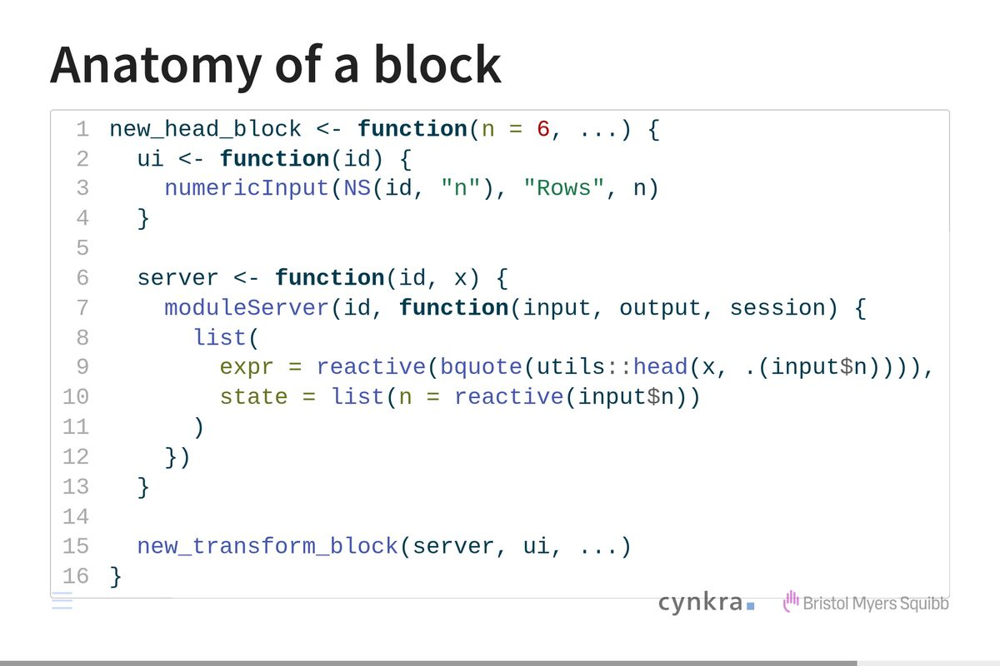

Play-doh. It’s a fun toy: you can create any shape you want with it.
To me personally though, that much freedom always felt more like a burden. You don’t get much assistance from the material.
I gravitated more towards lego.
Restrictions and well-defined interfaces helped me be more creative.
Two lumps of play-doh assemble however you press them together. Assembly of two bricks on the other hand is mediated by studs.
On the surface, lego costs you freedom. There are shapes you simply cannot build. What you get back is reuse, and with shaping constraints, you can spend your attention on the model instead of the material.
Much of this applies to what we do. I work at a small consultancy, and we have built a lot of Shiny apps over the years.
Every project felt like it needed to be tailor-made, so we ended up solving similar problems over and over again. Code bases grew large and hard to change. Clay, basically.
Now how can we improve? How can we have components carry over from one app to the next?
One way is by imposing restrictions. If we limit the shape by defining an interface, this enables reuse. It lets you focus on what matters. And it applies to humans and current-gen coding assistants alike.
The core abstraction we built for blockr is a block: a well-defined unit of computation.
Blocks are connected by links and can be assembled into stacks.
Each block has data inputs, user parameters and a single output. That is the whole contract.
The block is the brick, the link is the stud and the stack is the model. The stud is our interface: simple and well-defined.
We are using blockr at Bristol-Myers Squibb to explore clinical data from studies.
Our frontend here is built on a docking layout manager and we have every block render a panel you can move and resize freely.
These apps pull in up to one hundred blocks, spread over a dozen views. And we’re rolling out many such apps, specific to studies and their analysis needs.
Blocks are not the only extension point. There are extensions as well:
(1) On the left, we have a graphical overview, showing blocks, their connections and stack membership.
(2) And on the right, an AI assistant, which can manipulate and interrogate our app.
Most blocks here are general purpose: reading data, transforming it, displaying summary tables and visualizations that support drill-down.
(3) But one block was built specifically for this use case: the patient profile you can see in the middle.




Our current library of general-purpose blocks cannot cover every use case.
Similar to specialty pieces that come with certain lego sets, sometimes you want a specific shape, which still comes with the standard studs.
We made it easy for you to do just that by integrating your own blocks into a blockr app. Here’s what one looks like.
The head block:
(1) First are user parameters: here we need only one, n.
(2) It is seeded by the corresponding constructor argument.
(3) Next are data inputs: we again have only a single one: x.
(4) The data output is represented by an expression, so the result can be computed on demand from input data.
(5) And finally we return state: this allows us to save and restore.
Now it’s your turn: build a block. Either by hand, or by pointing a coding assistant at the many examples we have created.
And look out for what you don’t have to decide. That’s normally the expensive part of making something reusable.
I’d like to thank my four collaborators for their contributions – and you for your attention.
Unfortunately we don’t get a Q&A. So if you have questions for me, want to see or hear more, come find me.
| 2 | Any shape you want | 18 s | 0:18 |
| 3 | What carries over to your next app? | 78 s | 1:36 |
| 4 | A block | 29 s | 2:05 |
| 5 | A real app | 65 s | 3:10 |
| 6 | Specialty pieces | 26 s | 3:36 |
| 7 | Anatomy of a block | 31 s | 4:07 |
| 8 | Build a block. | 36 s | 4:43 |



